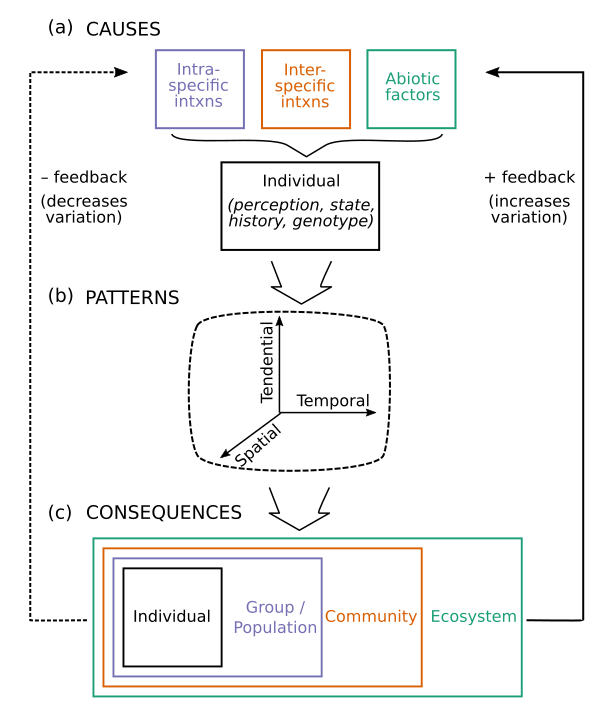

Current Research Areas
Mutualisms and movement. How do positive interactions between species shape movement behavior? How do
mutualisms constrain the ability to move?
The interplay between migration and disease. When can the risk and cost associated with parasite
infection favor hosts to migrate seasonally?
Eco-evolutionary feedback in dispersal. What ecological factors drive the evolution of dispersal, and
how does dispersal behavior feed back to influence these ecological factors?
Dispersal in structured landscapes. How does spatial structure shape the evolution of dispersal? What
consequences does variation in dispersal have for population structure and connectivity?
Academia. Which groups are underrepresented in academia? How can we support transitions through
challenging stages?

Past Research Areas
Drivers of migration. What ultimately drives animals to migrate? Why are some species migratory and others sedentary?Environmental change and movement. How will changing environmental conditions influence the selective pressures on movement?
Partial migration. Under what conditions should individuals of migratory species migrate (versus skip migration) and how frequently?
Insect movement and its consequences. How does the movement of insect vectors shape the spread of vector-borne diseases? How does insect pollinator movement affect crop yield?
Sex-biased dispersal and population spread. What favors sex differences in dispersal? What impact does sex-biased dispersal have at the population level in terms of structure, dynamics, viability and spread?